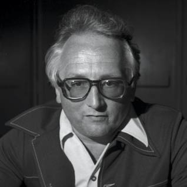

The 6502 MPU
Thesis
The 6502 MPU was so inexpensive yet so powerful that it forced the processor market price to drop and started the home computer revolution.

Chuck Peddle, the creator of the 6502
Photo from www.nytimes.com
Photo from www.nytimes.com
What is the 6502?
The 6502 is a processor from the 1970's, made by MOS Technology. Processors before the 6502 weren't as efficient as the 6502, and costed about 12 times more than it. The Intel 4004 CPU was lucky to be even counted as the first CPU, because it wasn't much better than a calculator chip. Chuck Peddle (creator of the 6502) said, "[I am] not trying to be negative about the guys that did it… they are nothing more than calculator chips."